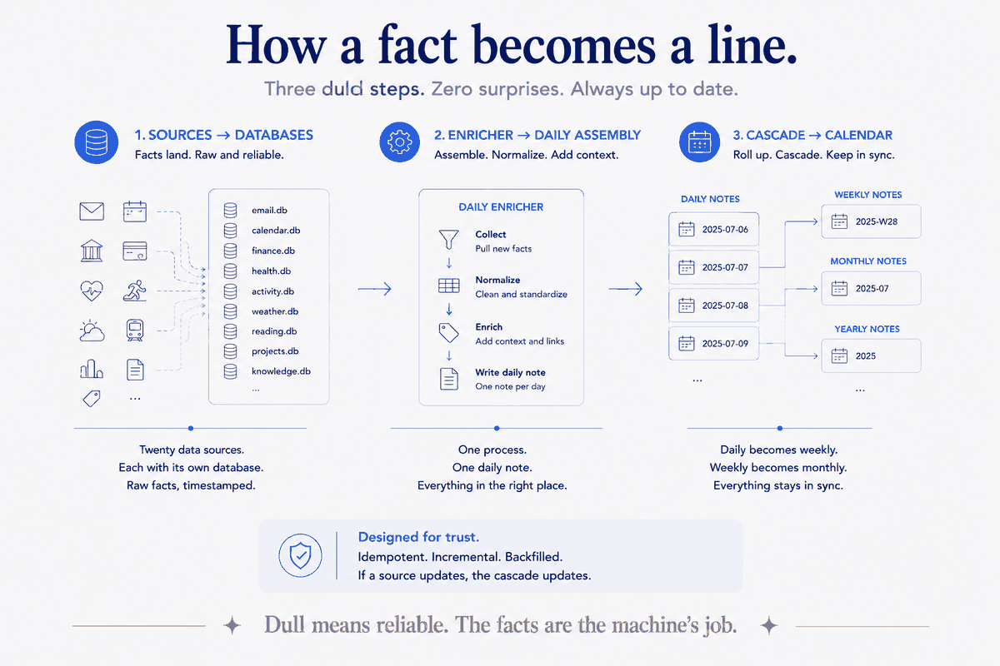
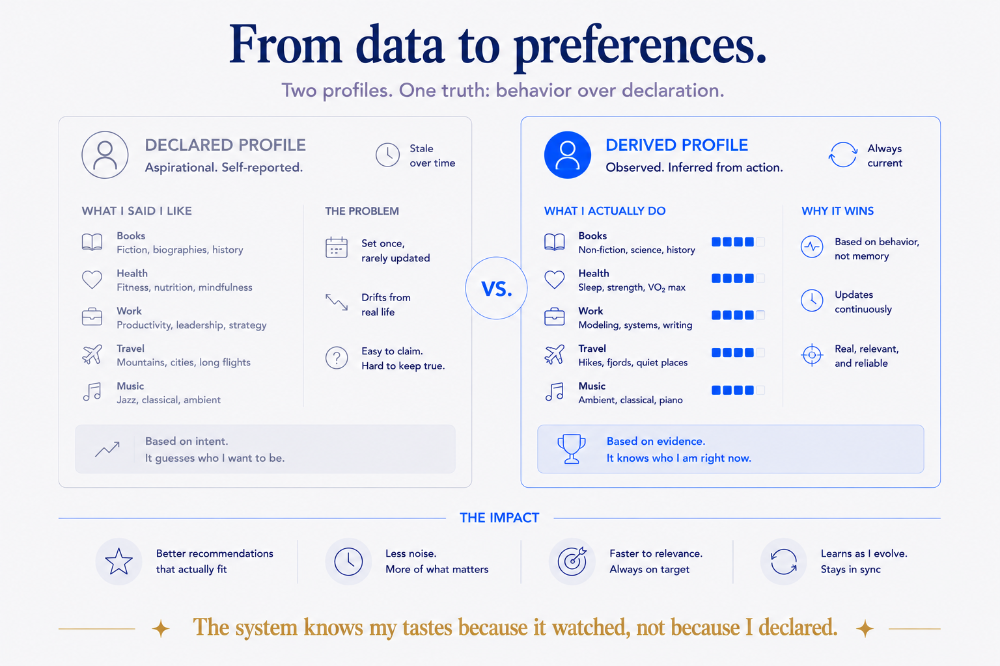

The daily note nobody keeps
Everyone who's tried journaling or a "daily note" habit knows how it ends. Week one, diligent. Week three, sporadic. Week six, a graveyard of empty dated files. The problem isn't discipline — it's that you're asking a human to be a data-entry clerk for their own life, every single day, forever. That never survives contact with a busy week.
So I inverted it. My daily note isn't something I write. It's something my system assembles — from data I'm already generating just by living. Where I was, what I spent, what I read, what I photographed, who I mailed. I show up to a note that's already half-written from facts, and I add only the part a machine can't: what it meant.
This is the enrichment layer, and it's the least glamorous, most valuable machinery I own. Let me open the hood.
Show the machinery: what actually feeds the note
This isn't a concept. It's a running system, and here are real numbers from it as I write:
- Mail — a Google export loaded into a local database: 385,000+ emails, plus a live connection for anything recent.
- Calendar — events from the same Google export, plus the live calendar.
- Banking — ~13,000 transactions going back to 2002, via a bank aggregator into a local finance database.
- Location — Google's location timeline: 176,000 GPS points from 2013 onward, so a day knows where it happened.
- Photos — EXIF and GPS from my photo library, geocoded (three ways, with fallbacks), so a day can reconstruct itself from the pictures I took.
- Reading — highlights from Readwise: 24,000+ items.
- Health, driving, business — Samsung Health, a Volvo driving log (~700 trips), body-composition from a smart scale, business bookkeeping — each a small importer into a local database.
And more around the edges — WhatsApp, CRM, trips, LinkedIn, Notion, published articles. All told, on the order of twenty sources, each one a small importer that lands data into a local DuckDB database, and roughly twenty connectors that let my AI query them live.
None of it was a grand project. Each source was a single afternoon: pick a thing my life already produces, write the small importer that captures it, move on. The system is the accumulation of those afternoons — twenty-odd of them by now — which is exactly why it compounds instead of sitting there as a plan.
How a fact becomes a line in a note
The pipeline is duller than it sounds, and that's the point — dull means reliable. Roughly:
1. Sources land in databases. Each source has an importer that normalizes its export into a local DuckDB table. Mail, calendar, transactions, location, photos, health — one database per source, kept separate. 2. An enricher assembles the day. A script reads a day's date, queries the relevant databases, and writes structured sections into that day's note — where I was, what I spent, what I measured, what came into the inbox that mattered. 3. It cascades up. Days roll into weeks, weeks into months, quarters, the year — so the summaries at every zoom level stay current without me touching them.
The note isn't a container I fill. It's a view, generated from my own data, that I then annotate. The facts are the machine's job. The meaning is mine.

From data to preferences — the part that surprised me
Filing facts is useful. But the machinery does something I didn't expect when I started: it derives preferences — a model of me — from the exhaust of ordinary life.
A pattern-extractor reads back over the enriched notes and surfaces the recurring things: the restaurants I return to, the places, the brands, the people, the kinds of book. Facebook's export gives follows and likes; reading highlights show what I actually engage with; transactions show where my money truly goes versus where I say it does. None of that is me sitting down to write "here are my preferences." It's derived — inferred from what I already did.
That's the difference between a profile you fill in (aspirational, stale in a month) and a profile that's observed (true, and always current). The system knows my tastes because it watched, not because I declared.

The honest state of it (because Proof means the warts too)
I'd rather show you the real system than a shined-up demo, so here's what's not perfect:
- Some sources are stale. The mail export ends a few months back; the location timeline likewise; the CRM hasn't synced since 2024. "Built and working" is not the same as "refreshed this morning." A live system still needs feeding, and mine has gaps where I haven't re-run an export.
- A few sources aren't built at all. YouTube playlists, Spotify listening, direct Goodreads — I don't have those yet. Music preference leaks in only as stray email notifications. Supermarket shopping is bank-level (I know I spent it) but not item-level (I don't know I bought the oat milk) without a manual receipt-parse.
- The messy formats fight back. Photo GPS is patchy on one phone; some exports need a manual step. This is real infrastructure, and real infrastructure is never quite done.
I'm telling you this because a system described as flawless is a system being sold, not shown. The value isn't that it's complete. It's that the architecture is right — sources into structured stores, structure into an enriched timeline, the timeline into a derived model of me — and any gap is just one more afternoon's importer away from closing.
Why this is the same lesson, again
Strip it down and it's the thesis of everything I build. A pile of raw exports — mailbox dumps, location JSON, transaction CSVs — is noise. The same data, routed through structure into a daily note that sits on a timeline, becomes a queryable memory of a life. Same bytes. Opposite value. The fork is structure, chosen on purpose.
And it's why the AI is useful to me in a way it isn't for most people. It's not that I have a cleverer model. It's that mine can see — twenty sources of real, structured data — and the seeing is what turns a generic assistant into one that knows where I was last Tuesday and what I've been reading all year.
Yours to take, and the part that isn't
The pattern here is free and I'll say it plainly: get your own data out (almost everything has an export — Google Takeout, your bank, your reading app), land each source in a structured store, and generate your daily view from it instead of typing it. Take it and run.
The kitchen — the part that's genuinely hard — is making twenty sources cohere: one database per source without it becoming a swamp, an enricher that assembles a day cleanly, a timeline that summarizes itself, a preference model that stays honest. That's not a script you paste. It's an architecture, tuned over years to one person's actual life. Designing that — for you, or for your organization's data — is the work worth doing together.
Because in the end the daily note that writes itself isn't magic. It's twenty boring importers and a spine to hang them on. The magic was never the model. It's the machinery — and the machinery is just your own data, given a deliberate shape.